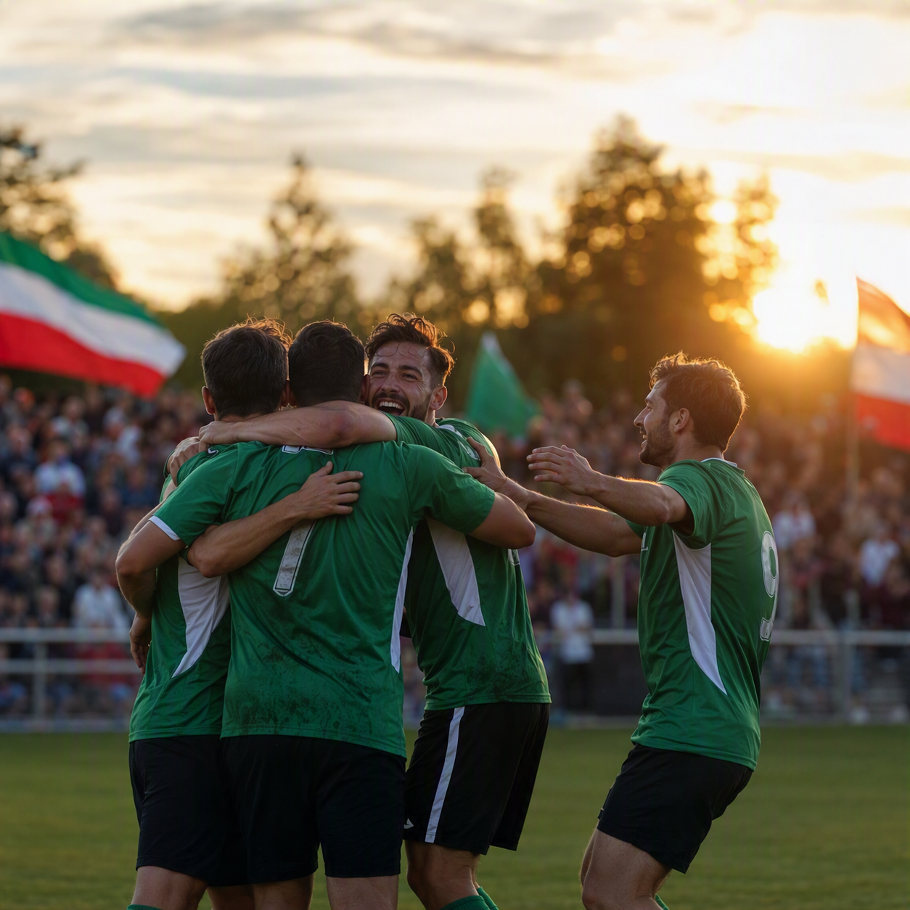

Tabellenstand
| Team | Platz | Spiele | Punkte |
|---|---|---|---|
| TSV Rudow I | 4 | 22 | 39 |
| TSV Rudow II | 7 | 21 | 31 |
| TSV Rudow III | 9 | 20 | 26 |
Diese Startseite führt in die fünf zentralen Bereiche des Fördervereins: Philosophie, Satzung, Ansprechpartner, Beitrittsformular und Aktuelles.
Die Struktur basiert auf den historischen Inhalten der alten Förderverein-Seite und ist für den neuen Auftritt modern aufbereitet.
Der Förderverein unterstützt den leistungsorientierten Fußball im TSV Rudow und schafft zusätzliche Möglichkeiten für sportliche Entwicklung, Organisation und Infrastruktur.
Besuchen Sie die fünf Themenbereiche über Navigation oder Bildkarten.

Der Förderverein bleibt im Mittelpunkt. Ergänzend werden hier Live-Sportdaten für TSV Rudow I, II und III aus html/data/league-data.json geladen.
| Team | Platz | Spiele | Punkte |
|---|---|---|---|
| TSV Rudow I | 4 | 22 | 39 |
| TSV Rudow II | 7 | 21 | 31 |
| TSV Rudow III | 9 | 20 | 26 |
Live-Daten werden bei Verfuegbarkeit automatisch geladen.
| Datum | Team | Begegnung | Ort | Details |
|---|---|---|---|---|
| 06.09.2026 | TSV Rudow I | TSV Rudow I vs. BSC Beispiel | Heim | - |
| 07.09.2026 | TSV Rudow II | FC Vorstadt vs. TSV Rudow II | Auswärts | - |
| 08.09.2026 | TSV Rudow III | TSV Rudow III vs. SG Süd | Heim | - |